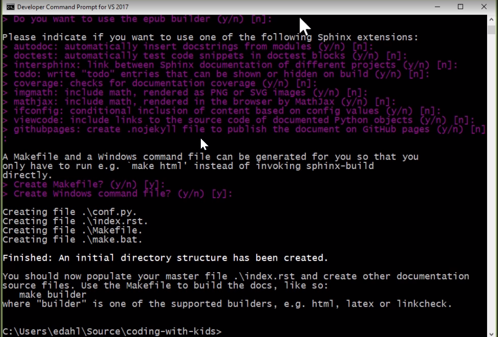

Welcome to Learning Read the Docs’s documentation!¶
This tutorial is for learning basic sytanx Commands for read the docs.
Italic content with Single astric.
Bold content with double astric.
decorated box with double back ticks.
List items should be with astric.
- Item1
- Item2
- Item3
Numbered List with hash followed by dot
- Item1
- Item2
- Item3
Adding Image example:
Code that we wanted to add:
private static string GetMessageFromException(Exception ex)
{
if (ex ==null) return "";
if (ex.InnerException != null)
{
return GetMessageFromException(ex.InnerException);
}
return ex.message;
}
If code is single language for the documentation we can add it on conf.py
file under pygments section add below line.
highlight_language = csharp
Testing Continuous Integration